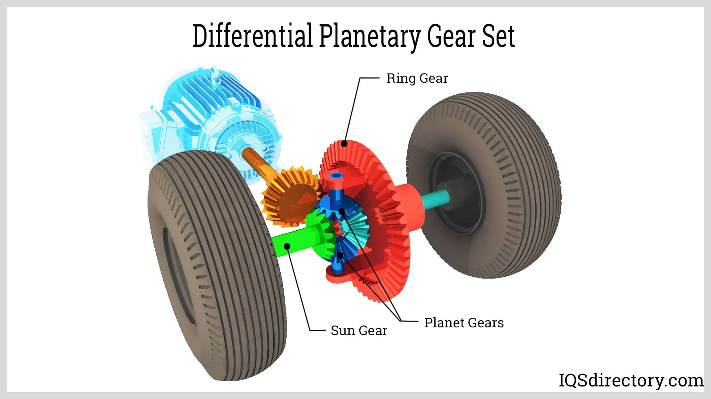

Differential
The differential allows the wheels to rotate at different speeds while transmitting power from the engine to the wheels, especially when turning.
Mechanical Process
- Ring Gear: Transfers power from the driveshaft to the differential.
- Pinion Gear: Engages with the ring gear to drive the differential.
- Side Gears: Connect to the axle shafts and allow wheels to spin at different speeds.
- Spider Gears: Allow the differential to split torque and enable wheel speed variation.
Core Components
- Ring Gear: Large gear connected to the differential case.
- Pinion Gear: Small gear driven by the driveshaft.
- Axle Shafts: Transfer power from the differential to the wheels.
- Differential Case: Houses the gears and allows rotation.